01
从零到整机：这个项目的开发顺序
先做硬件、再点亮外设、然后搭显示与 UI 框架、接着一个个长应用，最后联网与打包 —— 每一步都有可以单独验证的“做完标准”。
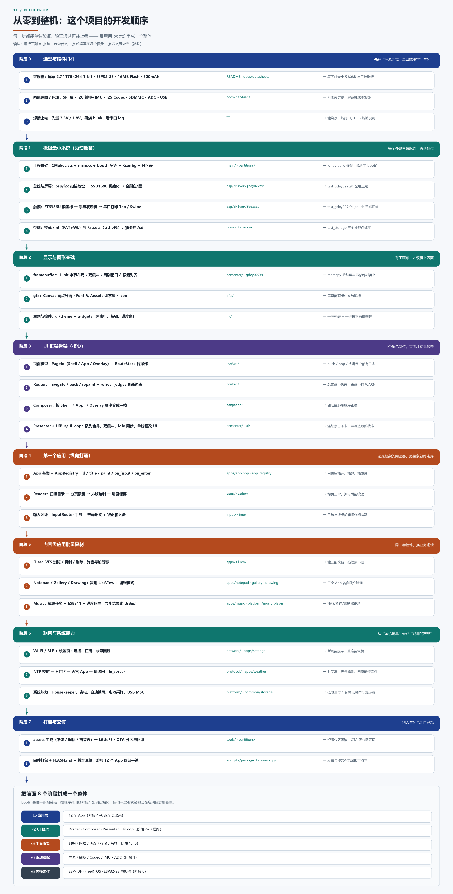
为什么是这个顺序？因为每一层都要“能验证”才值得往上走：
硬件不通就写驱动，是在猜；驱动没跑通就写 UI，是在赌；
UI 框架没稳就写 12 个 App，会同时踩 12 个坑。反过来，每层都留一个自测程序，
出问题时你能立刻判断是硬件、驱动还是上层逻辑。
给面试用的讲法：“我不是一次写完的，是按 硬件 → 驱动 → 显示 → 框架 → 应用 → 系统能力 → 发布
七层往上叠的。每叠一层都留下能验证的东西：
test_gdey027t91、test_storage、
以及后来的四个壳页面。最后 boot() 把各层初始化按顺序串起来，就是整机。”
02
项目全景：五层结构，一层只干一类事
应用层只写业务，框架层管路由与上屏，平台层管数据/网络/存储，驱动层碰寄存器，最下面是 ESP-IDF 与硬件。
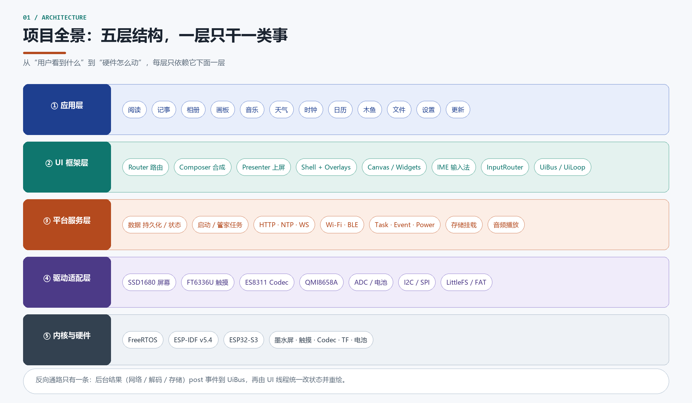
记住一句话：越界就是 bug 的温床。App 里不允许出现
spi_transmit()，
驱动里不允许出现 Router。
03
硬件连接：谁挂在哪个总线上
一块主控 + 7 个外设：SPI 屏、I2C 触摸与六轴、I2S 音频、SDMMC 卡、ADC 拨码与电池、USB 传文件。
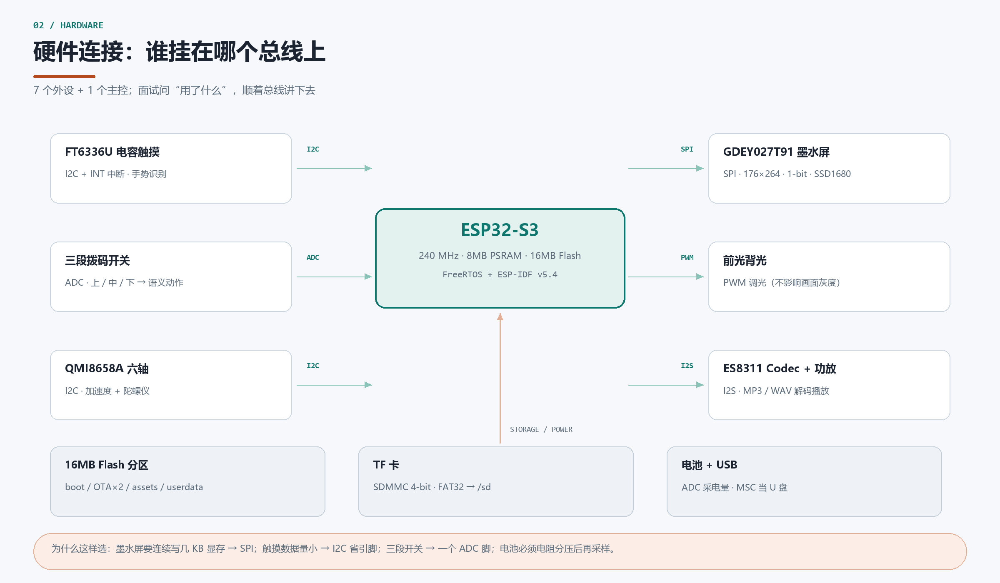
常被问：为什么屏幕用 SPI、触摸用 I2C？—— 屏幕一次要写几 KB 显存，SPI 够快且简单；
触摸每次只读几个字节，I2C 省引脚。
04
启动链路：9 步有序初始化
boot() 是一张步骤表，每步带 required 标记：关键步骤失败终止，其余降级继续。
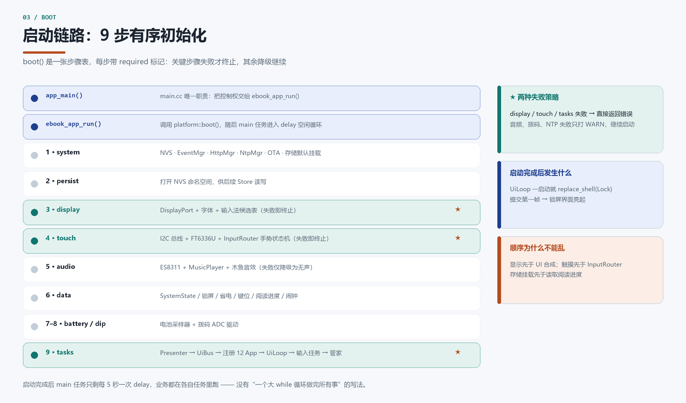
顺序不是随便排的：显示要先于 UI 合成；触摸要先于 InputRouter；
存储挂载要先于读取阅读进度。启动完成后，
main 任务只剩每 5 秒一次 delay。
05
一帧画面怎么上屏（核心）
四个角色分工：UI 线程合成、Router 决定波形、Presenter 搬帧 + 刷屏、DisplayPort 翻译成驱动动作。
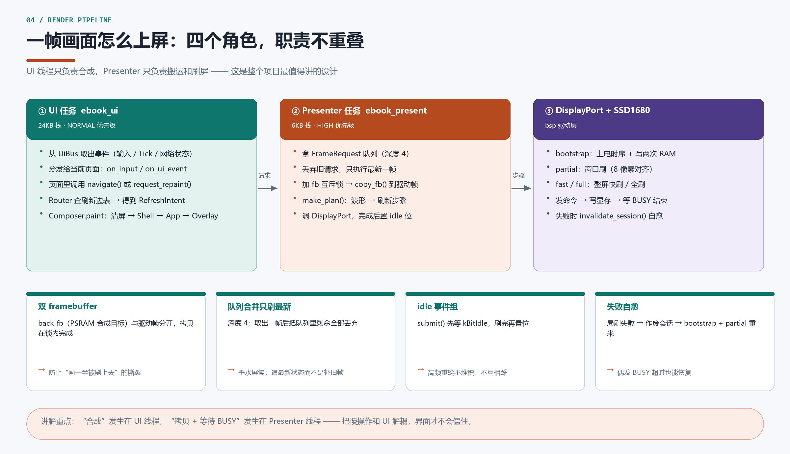
四个设计点：双 framebuffer 防撕裂 · 队列合并只刷最新 · idle 事件组防堆积 ·
局刷失败自动回退 bootstrap。
06
一次点击的完整时序
手指 → 触摸 IC → InputRouter 任务 → UiBus → UiLoop → App/Router → Presenter → 屏幕，一共 8 跳。
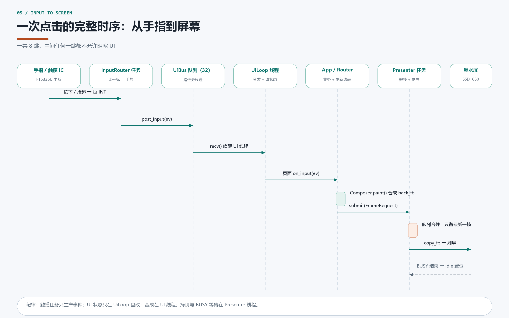
07
墨水屏刷新策略：把页面变化翻译成波形
全刷慢但干净、局刷快但留残影。框架用 refresh_edges.cc 一张边表统一决策。
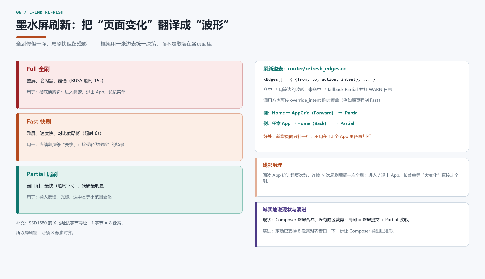
诚实讲现状：目前 Composer 是整屏合成，所谓局刷 = 整屏提交 + Partial 波形；
驱动已支持 8 像素对齐窗口，下一步才是真正的脏矩形局刷。
08
任务与并发模型
7 类任务 + 2 个队列 + 1 条纪律：只有 UI 线程能改 UI，其他任务只发事件。
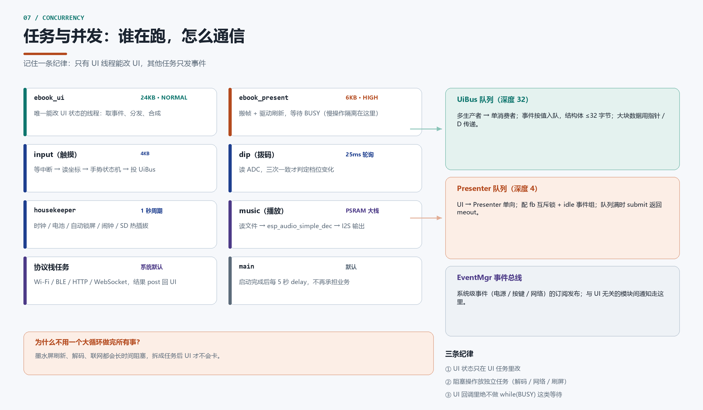
09
三条典型业务链路
阅读、音乐、天气 —— 三条链路刚好覆盖“本地文件 / 解码 / 网络”三种慢活。
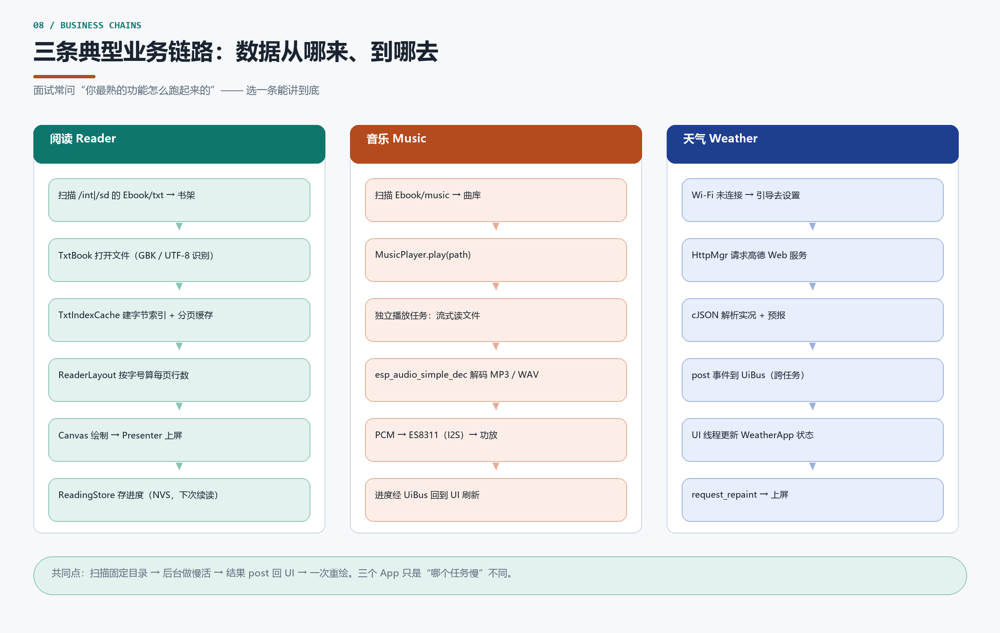
10
Flash 分区与挂载点
16MB 切 8 块：双 OTA、只读 assets、可写 userdata，再加一张可热插拔的 TF 卡。
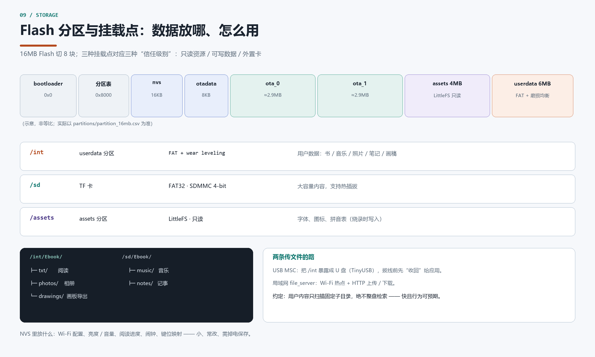
11
功能地图：12 个应用
11 个可用 + 1 个占位，按“内容 / 工具 / 系统”三类记最快。
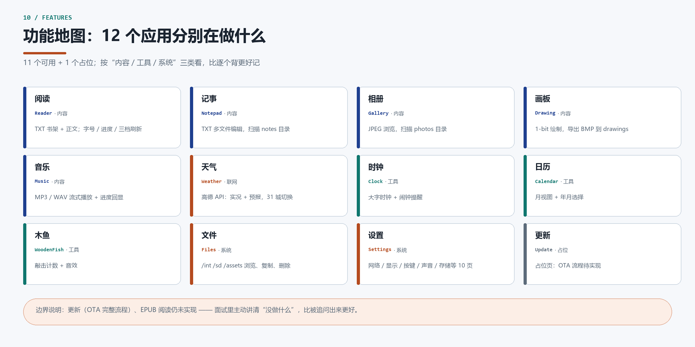